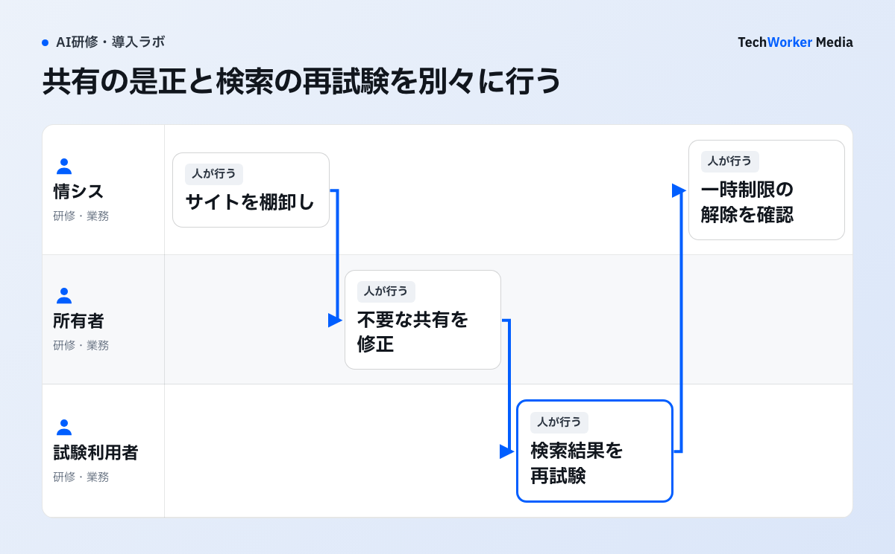

以前は気づかれなかった共有ファイルが、Copilotを使った検索で見つかることがあります。導入前に確かめたいのは、見つかりやすさだけでなく、誰がその内容を読める設定になっているかです。SharePointのレポートを使い、広すぎる共有範囲から調べます。
Microsoftのレポートで共有範囲を確認する
“identifies all sites, folders, and files … effectively public”

原文が指すのは、組織全体へ実質的に公開されたサイトだけでなく、フォルダーとファイルまで特定するレポートです。解説図では、抽出後に所有者へ戻し、権限修正と検索の再試験を分けています。
Copilot導入前に、SharePointの何を確認しますか？
全社共有、外部共有、所有者不在、高リスクサイトを抽出し、サイト所有者がアクセス権を直します。
権限修正中の一時措置には解除日と担当者を置きます。ライセンスを配る日ではなく、優先サイトの再試験が終わった日を利用開始条件にします。
導入前の4週間は、どう進めますか？
1週目に棚卸し、2週目に試験利用検索、3週目に共有の修正、4週目に研修、本番利用後は月次で見直します。
手順1 1週目：サイト単位で棚卸しし、優先順位を付ける
全ファイルを人手で開く必要はありません。次をサイト単位で抽出します。
- 所有者不在
- Everyone共有、匿名リンク、外部共有
- 権限の継承の破断
- 長期未更新
- 機密情報の存在
Microsoftの導入手順書は、データへのアクセス状況を調べるレポート（Data access governance report）と、サイトへのアクセス権の確認を使う手順を示しています[2]。是正は、所有者へ委任します。優先するのは、人事、法務、財務、経営会議、顧客情報です。
対象テナント（自社のMicrosoft 365環境）のサイト一覧を作ります。次を並べます。
- 事業所有者、管理所有者
- 機密区分
- 外部共有、全社共有
- 最終更新日
所有者が決まらないサイトは、Copilotの少人数の試験利用の対象外とします。削除せず、保留へ置きます。全社共有が業務上必要な社内規程やテンプレートもあるため、広い権限を一律に異常とは判定しません。
手順2 2週目：試験利用の参加者で実際に検索する
試験利用の参加者を、複数部門から選びます。実際の業務質問で検索します。「見つかってはいけない情報」と「見つかるべき情報」を、同数程度用意します。
過剰共有と検索不能を分けて記録します。結果には、回答本文だけでなく、参照されたファイル、サイト、利用者のアクセス経路を残します。
手順3 3週目：共有を修正し、制限機能を使い分ける
所有者が、不要な共有リンク、グループへの所属、継承の解除を修正します。
是正記録には、サイト名、所有者、過剰共有の経路、修正内容、検索の再試験結果を残します。RCDを使う場合は、解除担当と期限も同じ記録へ書きます。発見できない状態と、アクセス権が直った状態を別々に確認します。
制限機能は、役割が違います。下の表のとおり、見つけにくくすることと、読めなくすることは別の対策です。Restricted Content Discovery（RCD）は、修正中の一時措置として使います。解除日と担当者を決めます。
RAC（Restricted Access Control）や機密度ラベルを使う場合は、影響も試験します。対象は、通常検索、共同編集、既存自動処理です。
手順4 4週目：研修で権限の仕組みを練習する
少人数の試験利用の参加者で、報告窓口、所有者の修正期限、例外承認を決めます。
研修では、「機密情報を入れない」だけでなく、次を実環境で練習します。
- Copilotが既存アクセスを尊重する構造。
- 根拠ファイルの確認。
- 誤回答と、誤った共有の報告。
- 外部送信前の確認。
手順5 本番利用後：月次で見直す
新規サイト、所有者不在、全社共有、RCD滞留を、月次で確認します。制限したまま放置しません。
権限の棚卸しがうまくいかない例には、どんなものがありますか？
RCDで権限問題が解決したとみなす、一時策に依存する、隠しすぎるの3つが代表例です。
- RCDで権限の問題が解決したとみなす。RCDは、サイトのアクセス権自体を変えません。見つけにくくするだけです。
- 廃止予定の一時策に依存する。Restricted SharePoint Searchは、一時的な許可リストです。アクセス制御の境界ではありません。Microsoftは、2026年7月31日から新規有効化を停止しました[4]。既存テナントで有効でも、解除条件と恒久是正の期限を決めます。
- 制限を増やしすぎる。RCDを増やしすぎると、検索とCopilotの有用性も下がります。
- 所有者が決まらないサイトを削除する。削除せず、保留に置きます。
- 制限したまま放置する。解除日と担当者を決め、月次で見直します。
すべてを隠すのが答えではありません。アクセスの恒久是正、文書の更新と廃止、機密度ラベル、DLPを組み合わせます。業務上必要な発見性を保ちます。
発見制限とアクセス制限は、どう違いますか？
RCDは見つけにくくし、RACはアクセスを絞ります。RSSは一時策で、安全の境界ではありません。
| 機能 | 何をするか | サイトのアクセス権への影響 | 位置づけ |
|---|---|---|---|
| Restricted Content Discovery（RCD）[3] | 対象サイトを、組織横断検索やCopilotで発見されにくくする | 変えない | 修正中の一時措置。解除日と担当者を決める |
| Restricted Access Control（RAC）[2] | 指定グループへアクセスを絞る | アクセスの境界を別に設ける | 通常検索、共同編集、既存自動処理への影響を試験する |
| Restricted SharePoint Search（RSS）[4] | 一時的な許可リスト | アクセス制御の境界ではない | 2026年7月31日から新規有効化を停止。長期利用でなく、RCD、SharePoint Advanced Management、Purviewを使う |
出典：Microsoft公式ドキュメント（2026年9月21日確認）。番号は下の出典に対応します。
次の一歩は、何から始めればよいですか？
対象テナントのサイト一覧を作り、所有者が決まらないサイトを洗い出すところから始めます。
まず、1週目の手順を実行します。機密度ラベルやレポートなど、利用できる制御はライセンスで異なります[5]。利用できる機能は、自社のライセンスで確認します。
TechWorkerは、SharePointの共有状態、試験利用、利用ルール、研修を一体で設計します。画面下の「生成AI研修を相談する」から、ご相談ください。
出典と確認範囲
確認日：2026年10月6日。製品仕様、契約、助成要件は変更されるため、実施時点の公式情報を確認してください。